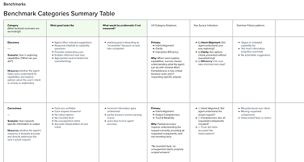
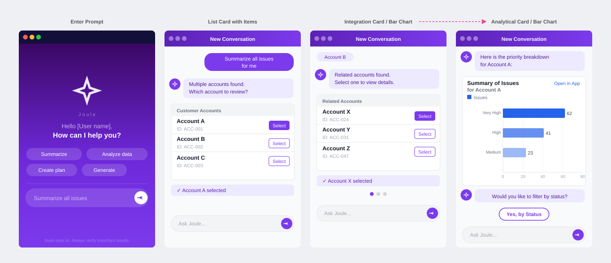

Turning agentic UX principles into executable product practice
SAP Cloud ALM · Joule · CSX UX Chapter · 2023–Present

Principles without criteria are unenforceable
By 2023, AI assistants were appearing in enterprise products faster than teams could develop a coherent UX position. The challenge wasn't a lack of interest in AI UX, there was plenty of that. The challenge was that most of the available guidance lived at the level of principles: be transparent, avoid overconfidence, design for trust.
Principles are necessary but insufficient for product practice. They don't tell a designer what to include in a Joule service result. They don't tell a product manager whether a proposed automation is appropriately scoped. They don't give a team a basis for comparing two AI interaction patterns and choosing one over the other.
What was needed was a translation layer, a way of turning high-level AI UX principles into specific, testable criteria that could be applied to real product decisions.
From principles to a 6-dimension evaluation framework
I developed an evaluation framework for agent output quality grounded in the specific interaction patterns of SAP Joule, a conversational AI assistant embedded in Cloud ALM and other SAP products. The framework gives designers and product managers a structured way to assess whether an AI-generated result meets UX quality bar before it ships.
Each dimension captures a distinct quality axis, not overlap, so that scoring one dimension doesn't contaminate another. The six dimensions:
Applying the framework to Joule
The framework was applied concretely to Joule service result guidance, the AI-generated recommendations that appear when a user queries a maintenance plan, change document, or operational alert. These results vary significantly in quality depending on how the underlying prompt and result rendering are configured.
Using the evaluation framework as a design review tool, the team could identify specific quality gaps in existing Joule outputs: cases where results scored well on completeness but poorly on trust calibration (output was thorough but didn't signal uncertainty appropriately), or high on interaction efficiency but low on cognitive load (too many steps were automated, removing the user's ability to verify before committing).

Reconstructed for this portfolio from the original project methodology; confidential product details removed.
Making automation legible
A core insight driving the interaction pattern work is that enterprise users need AI to be explainable, not just accurate. When an AI assistant suggests an action, a change to a maintenance plan, a priority escalation, an automated response to a monitoring alert, the user needs enough context to make a trust decision, not just an accept/reject binary.
The trust-first patterns I developed for Joule-adjacent workflows address this directly: agent actions are annotated with the reasoning basis (what signal triggered this suggestion), reversibility is made explicit before the user commits, and multi-step automations expose a confirmation checkpoint at the point of highest consequence rather than at the start of the flow.
These patterns are now part of the shared AI practice resources in the CSX UX chapter's Skills Registry, available to any team in the chapter working on AI-adjacent features.
Skills Registry and AI practice strand
The evaluation framework and trust-first patterns were designed from the beginning as chapter-level assets, not just tools for the Cloud ALM team, but reusable resources that any designer in the CSX UX chapter could apply to their own AI feature work.
The AI practice strand in the Skills Registry includes: the 6-dimension evaluation framework with scoring guidance, the trust-first interaction pattern library, a reading list structured by AI UX topic, and a set of review prompts for AI feature critique sessions. The strand is maintained and updated as new AI features are developed across the chapter.
Reflections
The most useful thing I did in this work was not build a better evaluation rubric, it was identify that the rubric was not the missing piece. Teams already had access to AI UX principles. What they lacked was a shared vocabulary for discussing AI output quality in product reviews, and a format for expressing that quality as design criteria rather than design preferences. The framework mattered because it gave the conversation a structure, not because it contained truths nobody had thought of before.
The trust calibration dimension also produced the most interesting design tension: teams consistently over-invested in signalling AI confidence (showing "AI-generated" badges, adding lengthy caveats) when the user's primary need was to understand what action to take next. Reducing trust signalling to what's decision-relevant, rather than what's epistemically accurate, was a non-obvious shift that required pushing back against a well-intentioned but counterproductive instinct.